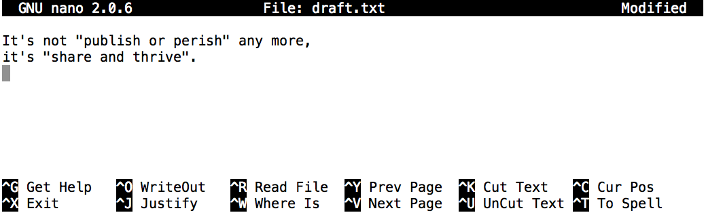

Working With Files and Directories¶
Learning Objectives
Create a directory hierarchy that matches a given diagram.
Create files in that hierarchy using an editor or by copying and renaming existing files.
Display the contents of a directory using the command line.
Delete specified files and/or directories.
The shell does not have a trash bin: once something is deleted, it’s really gone.
Depending on the type of work you do, you may need a more powerful text editor than Nano.
We now know how to explore files and directories,
but how do we create them in the first place?
Let’s go back to our data-shell directory on the Desktop
and use ls -F to see what it contains:
$ pwd
/Users/nelle/Desktop/data-shell
$ ls -F
creatures/ molecules/ pizza.cfg
data/ north-pacific-gyre/ solar.pdf
Desktop/ notes.txt writing/
Let’s create a new directory called thesis using the command mkdir thesis
(which has no output):
$ mkdir thesis
As you might guess from its name,
mkdir means “make directory”.
Since thesis is a relative path
(i.e., doesn’t have a leading slash),
the new directory is created in the current working directory:
$ ls -F
creatures/ north-pacific-gyre/ thesis/
data/ notes.txt writing/
Desktop/ pizza.cfg
molecules/ solar.pdf
Two ways of doing the same thing
Using the shell to create a directory is no different than using a file explorer.
If you open the current directory using your operating system’s graphical file explorer,
the thesis directory will appear there too.
While they are two different ways of interacting with the files,
the files and directories themselves are the same.
Good names for files and directories
Complicated names of files and directories can make your life painful when working on the command line. Here we provide a few useful tips for the names of your files.
Don’t use whitespaces.
Whitespaces can make a name more meaningful but since whitespace is used to break arguments on the command line is better to avoid them in names of files and directories. You can use
-or_instead of whitespace.Don’t begin the name with
-(dash).Commands treat names starting with
-as options.Stick with letters, numbers,
.(period),-(dash) and_(underscore).Many other characters have special meanings on the command line. We will learn about some of these during this lesson. There are special characters that can cause your command to not work as expected and can even result in data loss.
If you need to refer to names of files or directories that have whitespace
or another non-alphanumeric character, you should surround the name in quotes ("").
Since we’ve just created the thesis directory, there’s nothing in it yet:
$ ls -F thesis
Let’s change our working directory to thesis using cd,
then run a text editor called Nano to create a file called draft.txt:
$ cd thesis
$ nano draft.txt
Which Editor?
When we say, “nano is a text editor,” we really do mean “text”: it can
only work with plain character data, not tables, images, or any other
human-friendly media. We use it in examples because it is one of the
least complex text editors. However, because of this trait, it may
not be powerful enough or flexible enough for the work you need to do
after this workshop. On Unix systems (such as Linux and Mac OS X),
many programmers use Emacs or
Vim (both of which require more time to learn),
or a graphical editor such as
Gedit. On Windows, you may wish to
use Notepad++. Windows also has a built-in
editor called notepad that can be run from the command line in the same
way as nano for the purposes of this lesson.
No matter what editor you use, you will need to know where it searches for and saves files. If you start it from the shell, it will (probably) use your current working directory as its default location. If you use your computer’s start menu, it may want to save files in your desktop or documents directory instead. You can change this by navigating to another directory the first time you “Save As…”
Let’s type in a few lines of text.
Once we’re happy with our text, we can press Ctrl-O (press the Ctrl or Control key and, while
holding it down, press the O key) to write our data to disk
(we’ll be asked what file we want to save this to:
press Return to accept the suggested default of draft.txt).

Once our file is saved, we can use Ctrl-X to quit the editor and
return to the shell.
Control, Ctrl, or ^ Key
The Control key is also called the “Ctrl” key. There are various ways in which using the Control key may be described. For example, you may see an instruction to press the Control key and, while holding it down, press the X key, described as any of:
Control-XControl+XCtrl-XCtrl+X^XC-x
In nano, along the bottom of the screen you’ll see ^G Get Help ^O WriteOut.
This means that you can use Control-G to get help and Control-O to save your
file.
nano doesn’t leave any output on the screen after it exits,
but ls now shows that we have created a file called draft.txt:
$ ls
draft.txt
Let’s tidy up by running rm draft.txt:
$ rm draft.txt
This command removes files (rm is short for “remove”).
If we run ls again,
its output is empty once more,
which tells us that our file is gone:
$ ls
Deleting Is Forever
The Unix shell doesn’t have a trash bin that we can recover deleted files from (though most graphical interfaces to Unix do). Instead, when we delete files, they are unhooked from the file system so that their storage space on disk can be recycled. Tools for finding and recovering deleted files do exist, but there’s no guarantee they’ll work in any particular situation, since the computer may recycle the file’s disk space right away.
Let’s re-create that file
and then move up one directory to /Users/nelle/Desktop/data-shell using cd ..:
$ pwd
/Users/nelle/Desktop/data-shell/thesis
$ nano draft.txt
$ ls
draft.txt
$ cd ..
If we try to remove the entire thesis directory using rm thesis,
we get an error message:
$ rm thesis
rm: cannot remove `thesis': Is a directory
This happens because rm by default only works on files, not directories.
To really get rid of thesis we must also delete the file draft.txt.
We can do this with the recursive option for rm:
$ rm -r thesis
With Great Power Comes Great Responsibility
Removing the files in a directory recursively can be very dangerous
operation. If we’re concerned about what we might be deleting we can
add the “interactive” flag -i to rm which will ask us for confirmation
before each step
$ rm -r -i thesis
rm: descend into directory ‘thesis’? y
rm: remove regular file ‘thesis/draft.txt’? y
rm: remove directory ‘thesis’? y
This removes everything in the directory, then the directory itself, asking at each step for you to confirm the deletion.
Let’s create that directory and file one more time.
(Note that this time we’re running nano with the path thesis/draft.txt,
rather than going into the thesis directory and running nano on draft.txt there.)
$ pwd
/Users/nelle/Desktop/data-shell
$ mkdir thesis
$ nano thesis/draft.txt
$ ls thesis
draft.txt
draft.txt isn’t a particularly informative name,
so let’s change the file’s name using mv,
which is short for “move”:
$ mv thesis/draft.txt thesis/quotes.txt
The first argument tells mv what we’re “moving”,
while the second is where it’s to go.
In this case,
we’re moving thesis/draft.txt to thesis/quotes.txt,
which has the same effect as renaming the file.
Sure enough,
ls shows us that thesis now contains one file called quotes.txt:
$ ls thesis
quotes.txt
One has to be careful when specifying the target file name, since mv will
silently overwrite any existing file with the same name, which could
lead to data loss. An additional flag, mv -i (or mv --interactive),
can be used to make mv ask you for confirmation before overwriting.
Just for the sake of consistency,
mv also works on directories
Let’s move quotes.txt into the current working directory.
We use mv once again,
but this time we’ll just use the name of a directory as the second argument
to tell mv that we want to keep the filename,
but put the file somewhere new.
(This is why the command is called “move”.)
In this case,
the directory name we use is the special directory name . that we mentioned earlier.
$ mv thesis/quotes.txt .
The effect is to move the file from the directory it was in to the current working directory.
ls now shows us that thesis is empty:
$ ls thesis
Further,
ls with a filename or directory name as an argument only lists that file or directory.
We can use this to see that quotes.txt is still in our current directory:
$ ls quotes.txt
quotes.txt
The cp command works very much like mv,
except it copies a file instead of moving it.
We can check that it did the right thing using ls
with two paths as arguments — like most Unix commands,
ls can be given multiple paths at once:
$ cp quotes.txt thesis/quotations.txt
$ ls quotes.txt thesis/quotations.txt
quotes.txt thesis/quotations.txt
To prove that we made a copy,
let’s delete the quotes.txt file in the current directory
and then run that same ls again.
$ rm quotes.txt
$ ls quotes.txt thesis/quotations.txt
ls: cannot access quotes.txt: No such file or directory
thesis/quotations.txt
This time it tells us that it can’t find quotes.txt in the current directory,
but it does find the copy in thesis that we didn’t delete.
What’s In A Name?
You may have noticed that all of Nelle’s files’ names are “something dot
something”, and in this part of the lesson, we always used the extension
.txt. This is just a convention: we can call a file mythesis or
almost anything else we want. However, most people use two-part names
most of the time to help them (and their programs) tell different kinds
of files apart. The second part of such a name is called the
filename extension, and indicates
what type of data the file holds: .txt signals a plain text file, .pdf
indicates a PDF document, .cfg is a configuration file full of parameters
for some program or other, .png is a PNG image, and so on.
This is just a convention, albeit an important one. Files contain bytes: it’s up to us and our programs to interpret those bytes according to the rules for plain text files, PDF documents, configuration files, images, and so on.
Naming a PNG image of a whale as whale.mp3 doesn’t somehow
magically turn it into a recording of whalesong, though it might
cause the operating system to try to open it with a music player
when someone double-clicks it.
Renaming Files
Suppose that you created a .txt file in your current directory to contain a list of the
statistical tests you will need to do to analyze your data, and named it: statstics.txt
After creating and saving this file you realize you misspelled the filename! You want to correct the mistake, which of the following commands could you use to do so?
cp statstics.txt statistics.txtmv statstics.txt statistics.txtmv statstics.txt .cp statstics.txt .
Solution
No. While this would create a file with the correct name, the incorrectly named file still exists in the directory and would need to be deleted.
Yes, this would work to rename the file.
No, the period(.) indicates where to move the file, but does not provide a new file name; identical file names cannot be created.
No, the period(.) indicates where to copy the file, but does not provide a new file name; identical file names cannot be created.
Moving and Copying
What is the output of the closing ls command in the sequence shown below?
$ pwd
/Users/jamie/data
$ ls
proteins.dat
$ mkdir recombine
$ mv proteins.dat recombine
$ cp recombine/proteins.dat ../proteins-saved.dat
$ ls
proteins-saved.dat recombinerecombineproteins.dat recombineproteins-saved.dat
Solution
We start in the /Users/jamie/data directory, and create a new folder called recombine.
The second line moves (mv) the file proteins.dat to the new folder (recombine).
The third line makes a copy of the file we just moved. The tricky part here is where the file was
copied to. Recall that .. means “go up a level”, so the copied file is now in /Users/jamie.
Notice that .. is interpreted with respect to the current working
directory, not with respect to the location of the file being copied.
So, the only thing that will show using ls (in /Users/jamie/data) is the recombine folder.
No, see explanation above.
proteins-saved.datis located at/Users/jamieYes
No, see explanation above.
proteins.datis located at/Users/jamie/data/recombineNo, see explanation above.
proteins-saved.datis located at/Users/jamie
Organizing Directories and Files
Jamie is working on a project and she sees that her files aren’t very well organized:
$ ls -F
analyzed/ fructose.dat raw/ sucrose.dat
The fructose.dat and sucrose.dat files contain output from her data
analysis. What command(s) covered in this lesson does she need to run so that the commands below will
produce the output shown?
$ ls -F
analyzed/ raw/
$ ls analyzed
fructose.dat sucrose.dat
Solution
mv *.dat analyzed
Jamie needs to move her files fructose.dat and sucrose.dat to the analyzed directory.
The shell will expand *.dat to match all .dat files in the current directory.
The mv command then moves the list of .dat files to the “analyzed” directory.
Copy with Multiple Filenames
For this exercise, you can test the commands in the data-shell/data directory.
In the example below, what does cp do when given several filenames and a directory name?
$ mkdir backup
$ cp amino-acids.txt animals.txt backup/
In the example below, what does cp do when given three or more file names?
$ ls -F
amino-acids.txt animals.txt backup/ elements/ morse.txt pdb/ planets.txt salmon.txt sunspot.txt
$ cp amino-acids.txt animals.txt morse.txt
Solution
If given more than one file name followed by a directory name (i.e. the destination directory must
be the last argument), cp copies the files to the named directory.
If given three file names, cp throws an error because it is expecting a directory
name as the last argument.
cp: target ‘morse.txt’ is not a directory
Listing Recursively and By Time
The command ls -R lists the contents of directories recursively,
i.e., lists their sub-directories, sub-sub-directories, and so on
in alphabetical order at each level.
The command ls -t lists things by time of last change,
with most recently changed files or directories first.
In what order does ls -R -t display things?
{% solution “Solution” %}
The command ls -R -t displays the directories recursively in
chronological order at each level, and the files in each directory
are displayed chronologically.
{% endsolution %}
Creating Files a Different Way
We have seen how to create text files using the nano editor.
Now, try the following command in your home directory:
$ cd # go to your home directory
$ touch my_file.txt
What did the touch command do? When you look at your home directory using the GUI file explorer, does the file show up?
Use
ls -lto inspect the files. How large ismy_file.txt?When might you want to create a file this way?
Solution
The touch command generates a new file called ‘my_file.txt’ in your home directory. If you are in your home directory, you can observe this newly generated file by typing ‘ls’ at the command line prompt. ‘my_file.txt’ can also be viewed in your GUI file explorer.
When you inspect the file with ‘ls -l’, note that the size of ‘my_file.txt’ is 0kb. In other words, it contains no data. If you open ‘my_file.txt’ using your text editor it is blank.
Some programs do not generate output files themselves, but instead require that empty files have already been generated. When the program is run, it searches for an existing file to populate with its output. The touch command allows you to efficiently generate a blank text file to be used by such programs.
Moving to the Current Folder
After running the following commands,
Jamie realizes that she put the files sucrose.dat and maltose.dat into the wrong folder:
$ ls -F
raw/ analyzed/
$ ls -F analyzed
fructose.dat glucose.dat maltose.dat sucrose.dat
$ cd raw/
Fill in the blanks to move these files to the current folder (i.e., the one she is currently in):
$ mv ___/sucrose.dat ___/maltose.dat ___
Solution
$ mv ../analyzed/sucrose.dat ../analyzed/maltose.dat .
Recall that .. refers to the parent directory (i.e. one above the current directory)
and that . refers to the current directory.
Using rm Safely
What happens when we type rm -i thesis/quotations.txt?
Why would we want this protection when using rm?
Solution
$ rm: remove regular file 'thesis/quotations.txt'?
The -i option will prompt before every removal. The Unix shell doesn’t have a trash bin, so all the files removed will disappear forever. By using the -i flag, we have the chance to check that we are deleting only the files that we want to remove.
Copy a folder structure sans files
You’re starting a new experiment, and would like to duplicate the file structure from your previous experiment without the data files so you can add new data.
Assume that the file structure is in a folder called ‘2016-05-18-data’,
which contains a data folder that in turn contains folders named raw and
processed that contain data files. The goal is to copy the file structure
of the 2016-05-18-data folder into a folder called 2016-05-20-data and
remove the data files from the directory you just created.
Which of the following set of commands would achieve this objective? What would the other commands do?
$ cp -r 2016-05-18-data/ 2016-05-20-data/
$ rm 2016-05-20-data/raw/*
$ rm 2016-05-20-data/processed/*
$ rm 2016-05-20-data/raw/*
$ rm 2016-05-20-data/processed/*
$ cp -r 2016-05-18-data/ 2016-5-20-data/
$ cp -r 2016-05-18-data/ 2016-05-20-data/
$ rm -r -i 2016-05-20-data/
Solution
The first set of commands achieves this objective.
First we have a recursive copy of a data folder.
Then two rm commands which remove all files in the specified directories.
The shell expands the ‘*’ wild card to match all files and subdirectories.
The second set of commands have the wrong order: attempting to delete files which haven’t yet been copied, followed by the recursive copy command which would copy them.
The third set of commands would achieve the objective, but in a time-consuming way: the first command copies the directory recursively, but the second command deletes interactively, prompting for confirmation for each file and directory.
Key Points
cp old newcopies a file.mkdir pathcreates a new directory.mv old newmoves (renames) a file or directory.rm pathremoves (deletes) a file.Use of the Control key may be described in many ways, including
Ctrl-X,Control-X, and^X.
{% right %} CC BY 4.0 - Based on shell-novice © 2016–2017 Software Carpentry Foundation {% endright %}